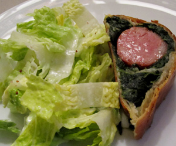

Saucisson Vaudois im Mantel
4,5 von 6Eine Zwiebel und eine Knoblauchzehe fein hacken, in Butter dünsten, 400 Gramm Blattspinat einige Minuten mitdämpfen. Mit Salz, Pfeffer und ein wenig Muskat abschmecken, alles etwas auskühlen lassen. Einen Blätterteig auslegen und den Spinat darauf verteilen. Eine Saucisson häuten und auf den Spinat geben. Den Teig verschliessen und mit einem Eigelb bestreichen. Bei 220 Grad 40 Minuten backen. Mit Salat servieren.
